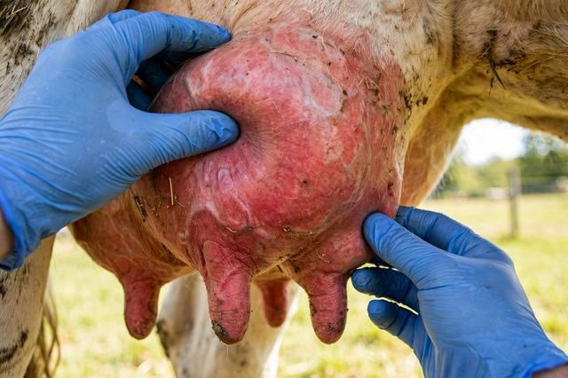

ساڑھ کیا ہے
ساڑھ تھن کی سوزش ہے جو عام طور پر جراثیم کے تھن کے اندر جانے سے ہوتی ہے۔ اس سے دودھ کم ہوتا ہے، دودھ کا معیار خراب ہوتا ہے اور علاج کا خرچ بڑھ جاتا ہے۔
ساڑھ دو طرح کی ہوتی ہے: ایک وہ جس میں علامات صاف نظر آتی ہیں، اور دوسری پوشیدہ ساڑھ جس میں دودھ بھی ٹھیک لگتا ہے اور تھن بھی، مگر اندر سوزش جاری رہتی ہے اور دودھ آہستہ آہستہ کم ہوتا رہتا ہے۔
اہم علامات
- تھن کا ایک حصہ سوجا ہوا، گرم اور دردناک ہو
- دودھ میں گٹھلیاں، پھٹکی، پانی جیسا دودھ یا خون آئے
- بخار ہو
- بھوک کم ہو جائے، جانور سست پڑ جائے
- دودھ واضح طور پر کم ہو جائے
- شدید حالت میں جانور کمزور ہو، منہ خشک اور آنکھیں دھنسی ہوئی لگیں
وجوہات کیا ہیں
جراثیم عام طور پر تھن کے سوراخ (نپل کے راستے) سے اندر جاتے ہیں، خاص طور پر دودھ نکالنے کے دوران یا اس کے فوراً بعد جب یہ راستہ کھلا ہوتا ہے۔ خطرہ ان باتوں سے بڑھتا ہے:
- دودھ نکالتے وقت ہاتھ اور تھن گندے یا گیلے ہوں
- بچھونا گندا اور گیلا ہو
- تھن پر چوٹ یا زخم ہو
- دودھ نکالنے کی مشین خراب یا غلط چل رہی ہو
- دودھ نکالنے کے بعد تھن کی دیکھ بھال نہ ہو
- ریوڑ میں پہلے سے متاثرہ جانور موجود ہوں
فوری دیکھ بھال
- متاثرہ تھن کا دودھ بار بار نرمی سے نکالیں اور اسے باقی دودھ میں ہرگز نہ ملائیں۔
- بیمار جانور کو ریوڑ سے الگ رکھیں اور اسے سب سے آخر میں دوہیں۔
- دودھ نکالنے سے پہلے ہاتھ دھوئیں اور تھن صاف و خشک کریں۔
- بخار، سخت سستی، کمزوری یا تیزی سے بگڑتا تھن ہو تو فوراً ویٹرنری ڈاکٹر کو بلائیں — تاخیر خطرناک ہو سکتی ہے۔
- پوشیدہ ساڑھ کی جانچ کے لیے CMT ٹیسٹ مدد دیتا ہے؛ آپ کا ڈاکٹر یہ ٹیسٹ کر سکتا ہے۔
⚠️ اہم: تھن میں دوا (ٹیوب) یا انجکشن صرف ویٹرنری ڈاکٹر کے مشورے سے دیں۔ جس دوا کا دودھ روکنے کا وقفہ (withdrawal period) چل رہا ہو، اس دوران کا دودھ نہ خود استعمال کریں، نہ بیچیں۔
بچاؤ کے طریقے
- دودھ نکالتے وقت ہاتھ اور تھن صاف اور خشک رکھیں۔
- دودھ نکالنے کے بعد تھنوں پر منظور شدہ جراثیم کش (ٹیٹ ڈپ) لگائیں۔
- بچھونا صاف اور خشک رکھیں؛ گوبر باقاعدگی سے اٹھائیں۔
- دودھ کی مشین کی باقاعدہ جانچ و صفائی کریں اور درست طریقے سے دودھ نکالیں۔
- بار بار ساڑھ والے جانوروں کا ریکارڈ رکھیں اور ڈاکٹر سے ان کی جانچ کروائیں۔
- بیمار جانوروں کو آخر میں دوہیں تاکہ جراثیم صحت مند جانوروں تک نہ پہنچیں۔
یاد رکھیں: ساڑھ کا اصل علاج جلد پہچان، صفائی اور ڈاکٹر کی درست رہنمائی ہے۔ جتنی جلدی مسئلہ پکڑا جائے، اتنا ہی نقصان کم ہوتا ہے۔
اکثر پوچھے جانے والے سوالات
کیا ساڑھ والے تھن کا دودھ استعمال ہو سکتا ہے؟
نہیں۔ متاثرہ تھن کا دودھ نہ استعمال کریں، نہ باقی دودھ میں ملائیں۔ اور علاج کے دوران دوا کے وقفے (withdrawal) تک پورے جانور کا دودھ استعمال و فروخت بند رکھیں۔
ساڑھ بار بار کیوں ہو جاتی ہے؟
عام وجوہات یہ ہیں: علاج ادھورا چھوڑ دینا، بچھونا و صفائی کی خرابی، تھن کی پرانی چوٹ، یا ریوڑ میں پوشیدہ ساڑھ والے جانور۔ ڈاکٹر سے دودھ کا ٹیسٹ (کلچر) کروانے سے اصل جراثیم معلوم ہوتا ہے اور علاج درست ہوتا ہے۔
کیا ساڑھ خود بخود ٹھیک ہو جاتی ہے؟
ہلکی پوشیدہ سوزش کبھی خود کم ہو جاتی ہے، مگر نظر آنے والی ساڑھ (سوجا تھن، خراب دودھ، بخار) کا علاج ضروری ہے۔ انتظار کرنے سے تھن کا حصہ مستقل خراب ہو سکتا ہے اور دودھ ہمیشہ کے لیے کم ہو سکتا ہے۔
CMT ٹیسٹ کیا ہے؟
یہ ایک سادہ سا ٹیسٹ ہے جو دودھ میں سوزش کی موجودگی ظاہر کرتا ہے، خاص طور پر پوشیدہ ساڑھ پکڑنے کے لیے۔ یہ فارم پر بھی ہو سکتا ہے اور سستا پڑتا ہے۔ اپنے ڈاکٹر سے کروائیں۔
ساڑھ سے دودھ کتنا کم ہوتا ہے؟
یہ شدت پر منحصر ہے۔ پوشیدہ ساڑھ بھی دودھ آہستہ آہستہ گھٹاتی رہتی ہے، جبکہ شدید ساڑھ میں اسی تھن کا دودھ تقریباً بند ہو سکتا ہے۔ اسی لیے جلد پہچان سب سے قیمتی ہے۔
متعلقہ صفحات
ویکسینیشن شیڈول · منہ کھر کی بیماری · بچھڑوں کی پرورش · دودھ بڑھانے کی رہنمائی · کیڑوں کی دوا (ڈی ورمنگ) · مکمل انگریزی رہنمائی: Mastitis in Cattle
⚠️ اہم بات: یہ رہنمائی صرف تعلیمی مقصد کے لیے ہے۔ بیماری کی درست تشخیص اور دوا کی خوراک کے لیے اپنے قریبی رجسٹرڈ ویٹرنری ڈاکٹر سے ضرور مشورہ کریں۔